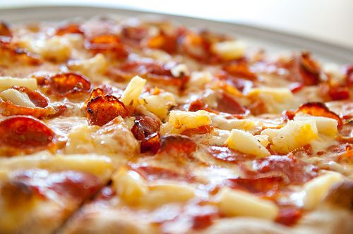
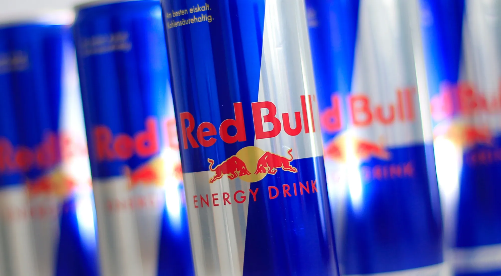

I came to Whitworth because of all the great art programs it had to offer as well as it is not to far from my family
I chose Graphic Design
https://amckinney964.wixsite.com/alyssa-mckinneyBecause I have always been tech savvy in a way and I loved making art and so I wanted to purse something I felt I would be good at but also enjoy and not dread
For fun I like to go on walks, play games like Fortnite and call of duty with my brothers and cousins, and friends. I as well like going camping and swimming in the summer. I have recently found interest in this game called house flipper, basically it is about flipping houses and I enjoy the design aspect of the game and all the little perks it has.
1. Pizza 2. Redbull 3. Lioness:the tv show 4. All of the Dexter series 5. My cat sweetie
 
Html: Hypertext Markup Language, a standardized system for tagging text files to achieve font, color, graphic, and hyperlink effects on World Wide Web pages.
CSS: Cascading Style Sheets is a style sheet language used for specifying the presentation and styling of a document written in a markup language such as HTML or XML. CSS is a cornerstone technology of the World Wide Web, alongside HTML and JavaScript.
Elements: The element() CSS function defines an
Tags: The 'tag' selector in CSS is used to target and style HTML elements based on their tag names. For example, using the selector "p" will target all paragraph elements in the HTML document.
Whitespace Collapse: If spaces are to be collapsed: Spaces or tabs before or after segment breaks are removed. Sequences of spaces are converted, or "collapsed", to a single space.
Structural Markup: What is Structural Markup? Structure is the information components within an HTML document. For instance: headings, lists and paragraphs. HTML provides some elements that are strictly "structural" - meaning that they are used to define the structure for a web page, in semantic terms.
Semantic Markup: Semantic markup refers to marking up a document with information about the actual data structure behind the information, rather than styling the document with exclusively visual information. In the case of HTML, for example, this means using heading tags instead of just changing the size of the font.